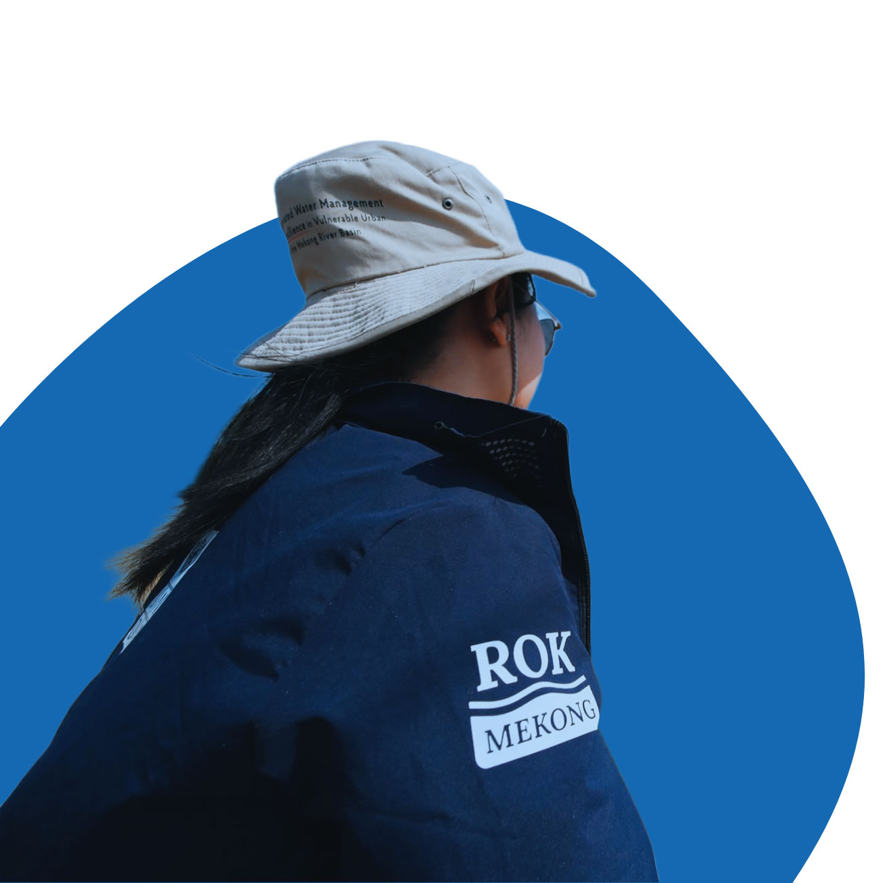
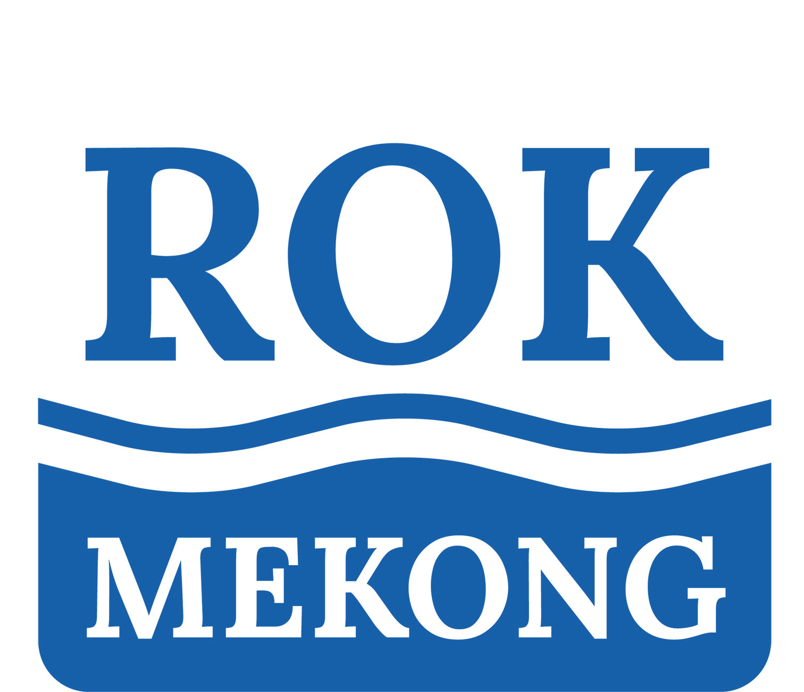
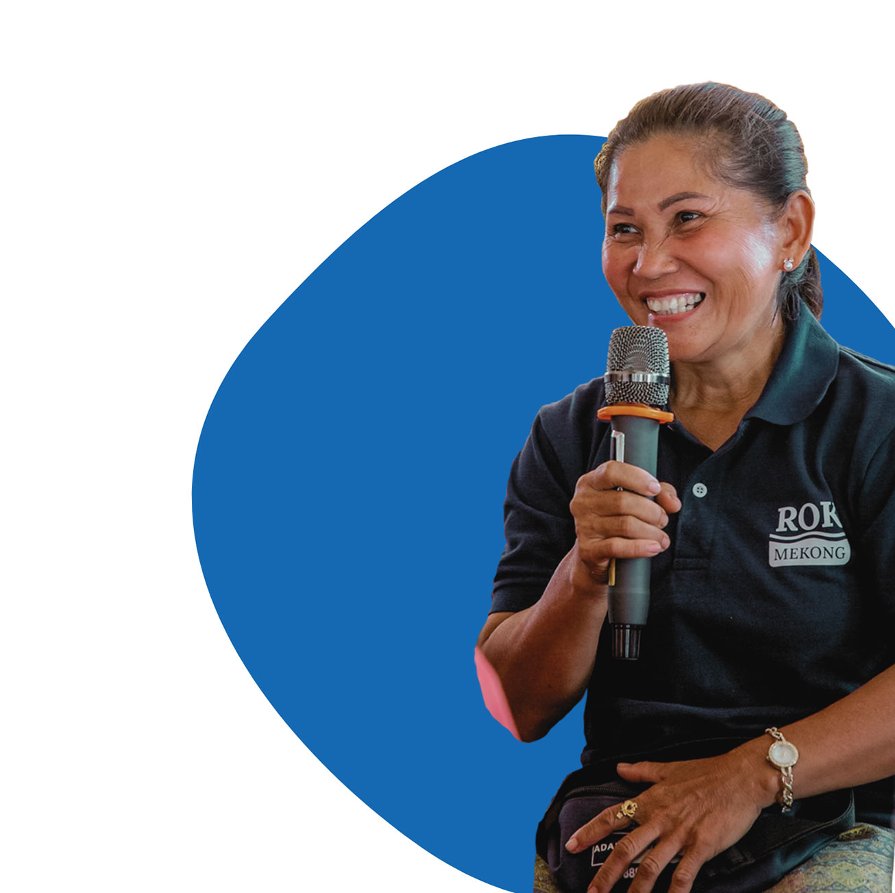

branding
A selection of logo and branding projects for international organisations and independent clients.
United Nations Development Programme – Governance Unit - Lao PDR Branding Package and Visual Identity for the LEAP Project


![One Door Service Center graphic on a plain [colour] background with the message 'Complete the survey, shape your public services today', inviting users to complete a survey.](Images_Portfolio-Branding/Examples of logos in use/ODSC ex6.jpg)

>> View ODSC facebook page here
United Nations Development Programme – Environment Unit - Lao PDR FARM Project


United Nations Development Programme – Environment Unit - Lao PDR ROK Mekong Project



Paw Wee Thing - New Zealand Illustration and design of logo and website for Canine Remedial Massage Services

Bike Town - Cambodia Illustration and design of logo for signage and advertising
Balcony Lounge Bar - Cambodia Illustration and design of a dual-version logo for signage representing the venue's two distinct identities: a daytime restaurant and a nighttime bar